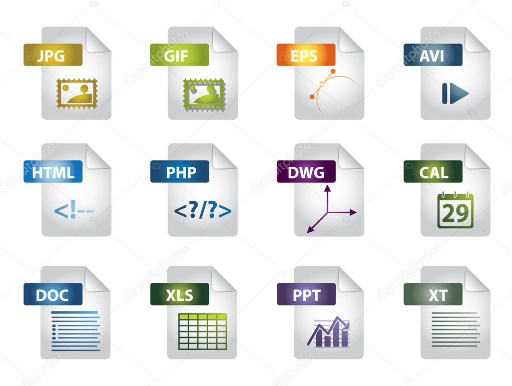
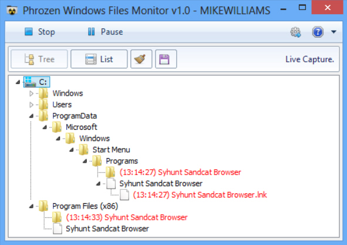

SOUBOR
(file) je množina souvisejících dat uložených na diskové jednotce.- Název souboru je obvykle tvořen jménem (ve Windows až 254
znaků) a příponou, která naznačuje typ souboru.
K dalším vlastnostem souboru patří :
- jeho velikost
- autor (vlastník)
- datum vytvoření
- datum změny
- atributy
- přístupová práva
K přehlednější práci se soubory slouží systém adresářů či složek (directories, folders). Adresáře tvoří na disku typicky hierarchickou strukturu (tree - strom);
základem je tzv. kořenový adresář (root) označený symbolem :„/“ (Unix, Linux) „\“ (Windows).
Každý adresář může obsahovat soubory i podadresáře (subdirectories).
| 
|
CESTA
vyjadřuje umístění souboru vždy směrem od nejvyššího adresáře:C:\XAMPP\mysql\bin\mysql.exe|

|
×

Při operacích se soubory využíváme někdy :
- symbol * nahrazuje v názvu libovolný počet znaků (např. *.*)
- symbol ? nahrazuje jeden libovolný znak (např. s?s.txt)
Programové soubory - obsahují instrukce, podle nichž procesor ve spolupráci s dalšími hardwarovými komponentami plní konkrétní úlohy. Mohou být uloženy v již zkompilované binární podobě (nejčastěji ve strojovém kódu pro danou platformu), nebo ve zdrojovém kódu, obsahujícím příkazy určitého programovacího jazyka.
Mezi programové soubory můžeme zařadit také skripty, soubory instrukcí v textové podobě, které ke svému spuštění vyžadují speciální program - interpret.
Větší programy jsou tvořeny programovými knihovnami (runtime libraries), speciálními soubory s připravenými funkcemi, které programy využívají pro svůj běh.
Ve Windows to jsou např. soubory DRV a SYS (obsahující zejména ovladače čili drivery, ale i systémové funkce), nebo také DDL (dynamic linking library - dynamicky linkované knihovny), které mohou být podle potřeby za běhu (dynamicky) připojeny k jednomu i více programům. Některé soubory s tzv. spu